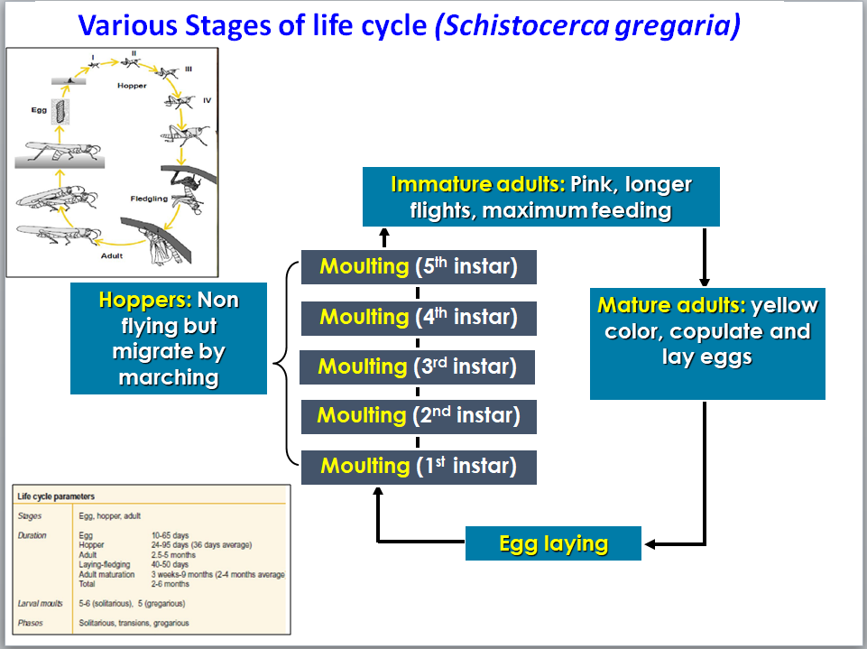

The Scheduled Desert Area (SDA) in India refers to specific regions
within Rajasthan, Gujarat, and Haryana, designated for desert locust
monitoring and control. These areas are prone to desert locust
breeding and outbreaks, particularly during the monsoon season when
favorable breeding conditions exist. The SDA covers a total area of
approximately 2.05 lakh sq km.
Here's a more detailed breakdown:
Location: The SDA primarily encompasses parts of
Rajasthan, Gujarat, and Haryana.
Rajasthan: The largest portion of the SDA lies within
Rajasthan, covering about 1.79 lakh sq km.
Gujarat: Gujarat accounts for roughly 23,077 sq km of the
SDA.
Haryana: Haryana contributes about 3,457 sq km to the
SDA.
Purpose: The SDA is designated to facilitate the work of
the Locust Warning Organization (LWO) in monitoring and controlling
desert locust populations.
Locust Activity: The SDA provides suitable breeding
grounds for desert locusts, particularly during the monsoon season
(May to November).
Monitoring and Control: The LWO conducts regular surveys
and control operations within the SDA to mitigate the risk of locust
plagues.
Economic Threshold: Surveys aim to identify areas where
locust populations have reached the economic threshold level,
indicating a need for control measures.
The Desert Locust, Schistocerca gregaria, undergoes a three-stage life cycle: egg, hopper (nymph), and adult. The female locust lays eggs in the soil, which hatch into hoppers that undergo several molts before becoming winged adults. The entire cycle, from egg to adult, can take from a few weeks to a few months, influenced by environmental conditions.

In July 2020, the Thar Desert region experienced significant locust
activity, with breeding and swarms reported in several districts of
Rajasthan and Gujarat. Key areas included Jaisalmer, Barmer, Jodhpur,
Bikaner, Churu, Nagaur, Sri Ganganagar, Jhunjhunu, Hanumangarh, and
Kutch district of Gujarat. Heavy rainfall during this period created
favorable conditions for locust breeding along the India-Pakistan
border.
Here's a more detailed breakdown:
Rajasthan:
Locusts were active in Jaisalmer, Barmer, Jodhpur, Bikaner, Churu,
Nagaur, Sri Ganganagar, Jhunjhunu, Hanumangarh, and Sikar.
Gujarat:
Locusts were also present in the Kutch district.
Breeding Conditions:
Heavy rains, particularly along the border, contributed to increased
breeding activity.
Control Operations:
Locust control operations were carried out in several districts,
targeting both swarms and hoppers.
Crop Damage:
Locusts caused significant crop damage in various districts, including
Sri Ganganagar, Jaisalmer, Barmer, Bikaner, Jodhpur, Churu, and
Nagaur.
Locusts primarily migrate with the wind, meaning they generally fly
downwind. While they can also fly upwind, their migrations are largely
influenced by wind direction. They don't have a specific directional
sense, but rather react to various environmental cues, including wind,
the sun, and other visual stimuli.
Factors Influencing Locust Migration:
Wind:
Locusts are known to fly with the wind, making downwind
movement the dominant pattern. However, they can also fly upwind,
especially when responding to other stimuli or trying to maintain a
specific swarm direction.
Sun and other visual cues:
Locusts use the sun and other visual features of their
environment to orient themselves during migration.
Environmental factors:
Temperature, humidity, and the availability of food also play a
role in determining where locusts migrate.